Sortiment waschbarer Tierunterlagen
16 fertige Designs für Hunde, Katzen und Kleintiere, jeweils mit Artikelnummer, Größe und vollständigem Aufbau. Jedes Design lässt sich für Ihre Marke anpassen.
 106
10616 Designs auf einen Blick
Klicken Sie auf ein Design, um Bilder und Spezifikationen zu sehen.
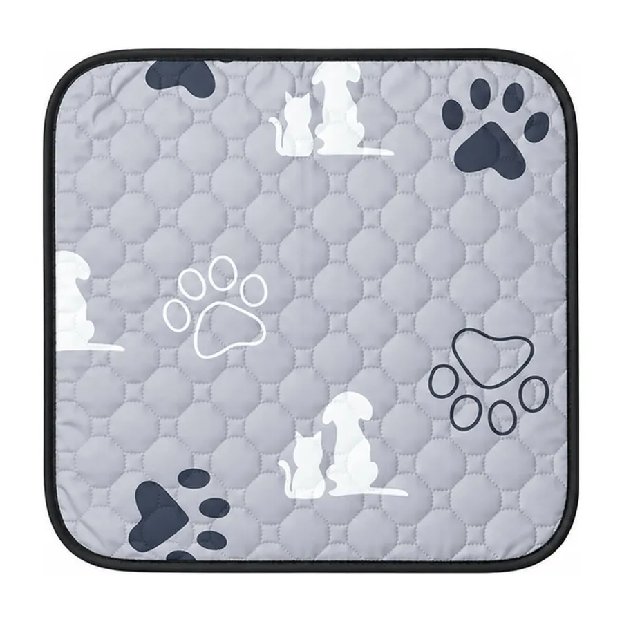
107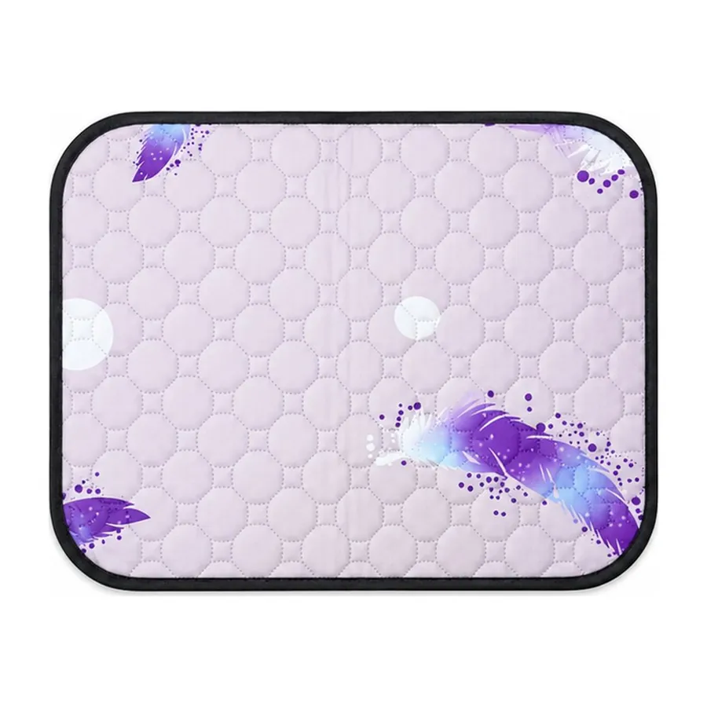
108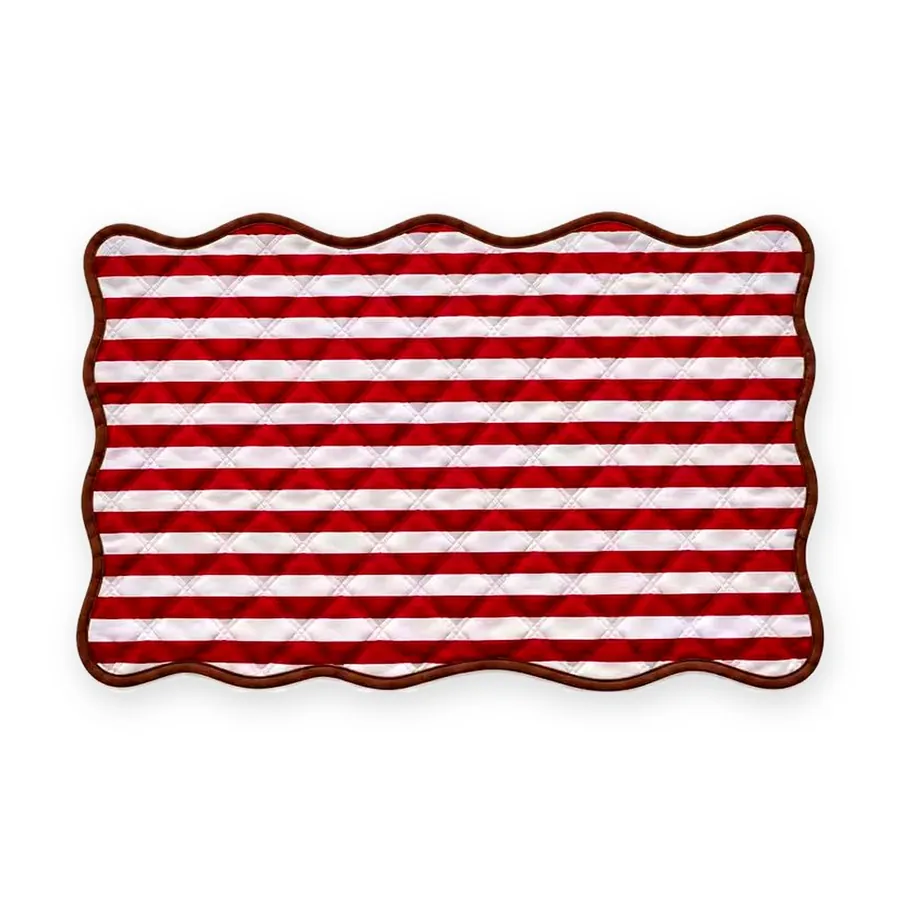
109 110
110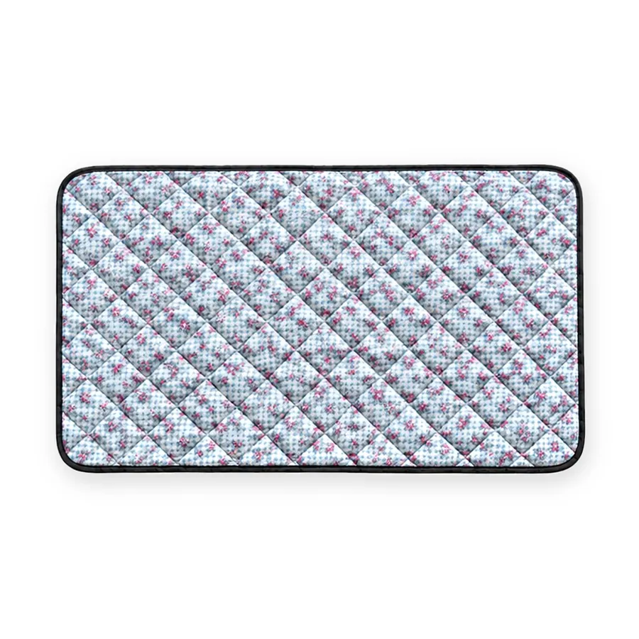
111 112
112 113
113 114
114 115
115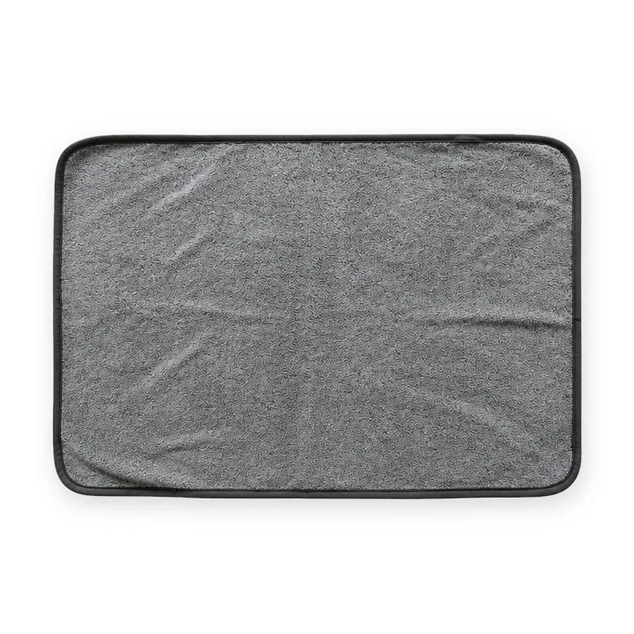
116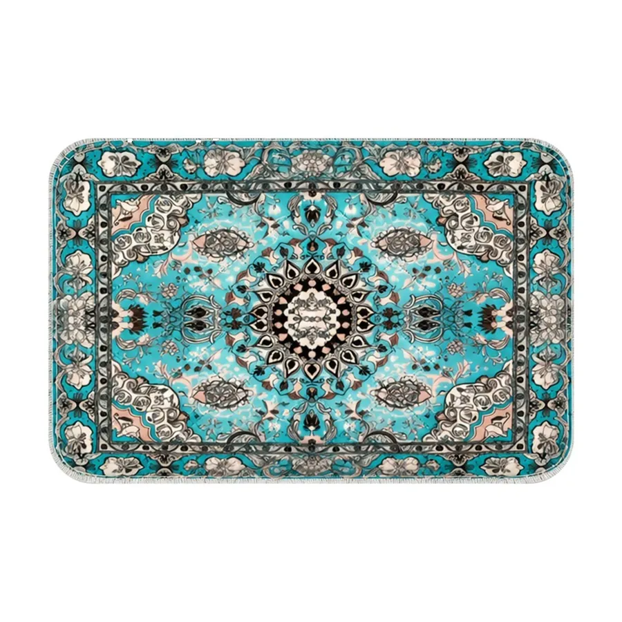
117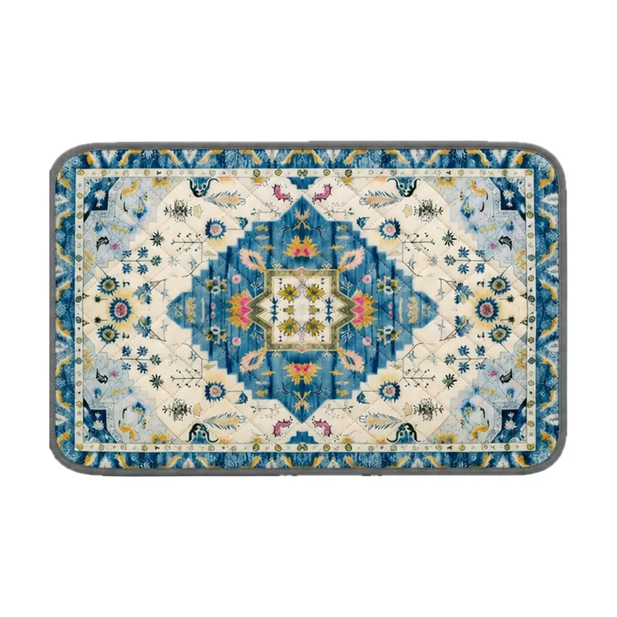
118 119
119 120
120 121
121 122
122Unterlagen für Böden, Boxen, Sofas und Betten
14 Designs, 16 Artikelnummern.
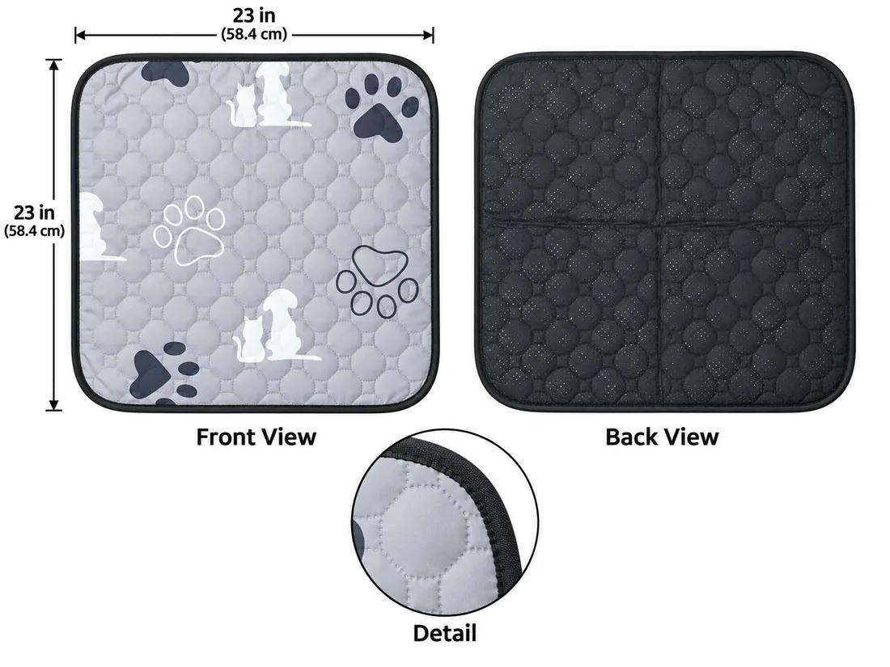
123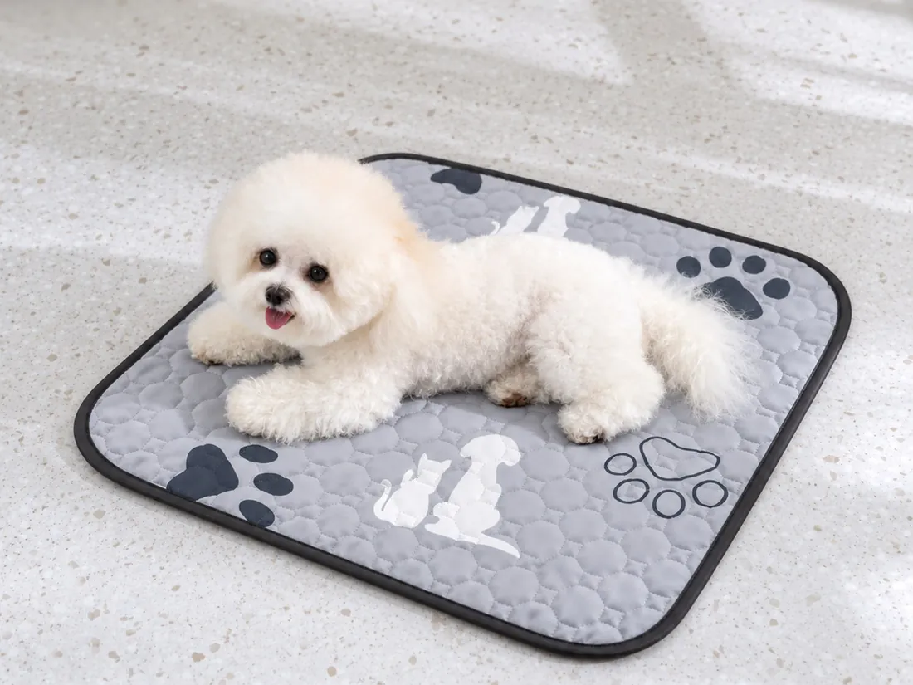
124 125
125 126
126Pfotenmuster, hellgrau
Eine quadratische Unterlage mit hellgrauem Pfotenmuster, Achteck-Prägung und Stoffbandeinfassung. Die schwarze Unterseite trägt Silikonpunkte, damit die Unterlage auf Fliesen und Holz liegen bleibt.
| Größe | 23 × 23 in (58 × 58 cm) |
|---|---|
| Design | Hellgrau mit Hunde-, Katzen- und Pfotenmotiven |
| Oberstoff | Polyester, saugfähig |
| Steppung | Achteckraster, Ultraschallprägung |
| Kante | Stoffbandeinfassung |
| Unterseite | Polyester mit rutschfesten Silikonpunkten (2 mm Punkte, 1 cm Abstand) |
| Lagen | 4 · TPU-Sperrfolie |
| Einsatz | Welpentraining, Boxen, Böden |
 127
127 128
128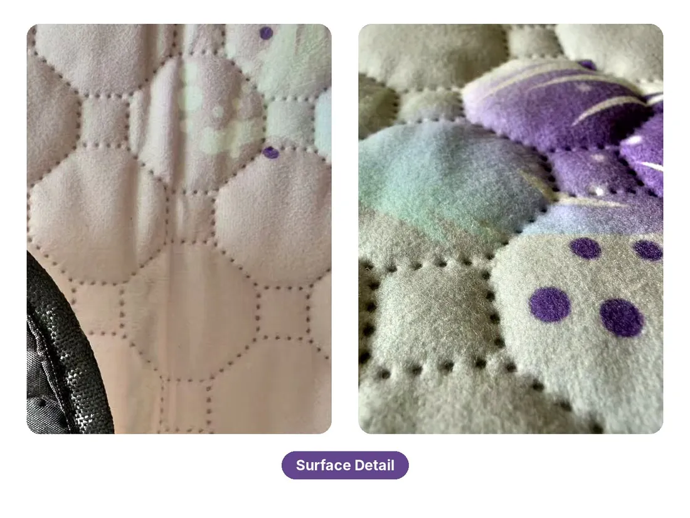
129 130
130Federmuster, flieder
Eine kompakte Unterlage mit fliederfarbenem Federmuster und runder Steppung. Klein genug für Transportboxen, Hundeboxen und Reisen, mit gepunkteter rutschfester Unterseite.
| Größe | 17 × 23 in (44 × 59 cm) |
|---|---|
| Design | Flieder mit lila Federmuster |
| Oberstoff | Polyester, saugfähig |
| Steppung | Runde Steppung |
| Kante | Stoffbandeinfassung |
| Unterseite | Polyester mit rutschfesten Silikonpunkten (2 mm Punkte, 1 cm Abstand) |
| Lagen | 4 · TPU-Sperrfolie |
| Einsatz | Transportboxen, Hundeboxen, Reisen |
 131
131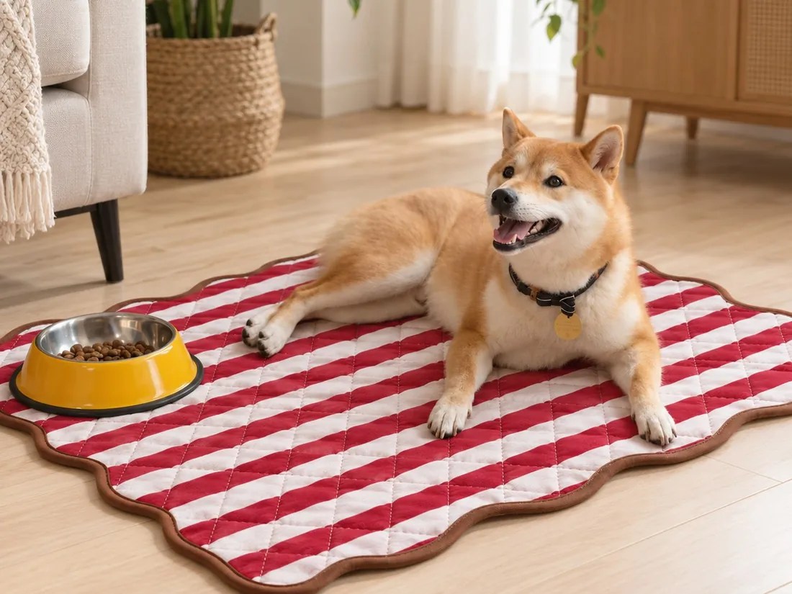
132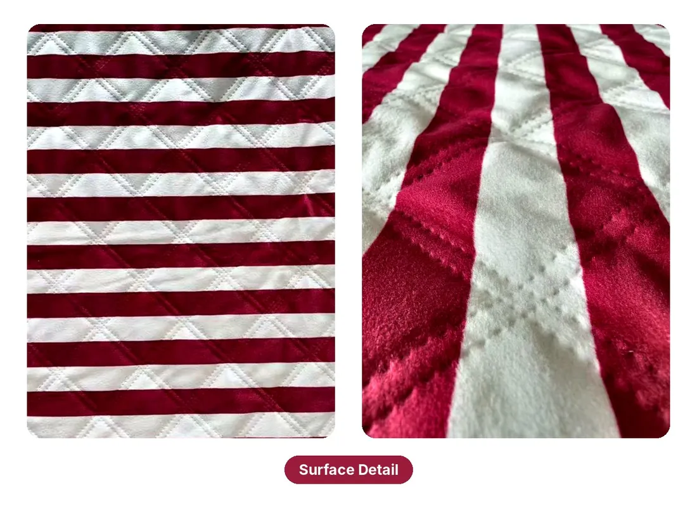
133 134
134Rote Streifen, Wellenkante
Rot-weiße Streifen mit Rautenprägung und Wellenkante in gewebter Bandeinfassung. Eine dekorative Unterlage mit vollem 4-lagigem Aufbau und TPU-Folie.
| Größe | 22 × 33 in (55 × 84 cm) |
|---|---|
| Design | Rot-weiße Streifen, Wellenkante |
| Oberstoff | Polyester, saugfähig |
| Steppung | Rautenmuster, Ultraschallprägung |
| Kante | Gewebte Bandeinfassung |
| Unterseite | Polyester mit rutschfesten Silikonpunkten (2 mm Punkte, 1 cm Abstand) |
| Lagen | 4 · TPU-Sperrfolie |
| Einsatz | Wohndeko, Welpentraining, Böden |
110 135
135 136
136 137
137 138
138Mint, rund, Wellenkante
Eine runde mintfarbene Matte mit Längssteppung und Wellenkante. Auf der wasserabweisenden Oberseite perlt Flüssigkeit ab und lässt sich abwischen; die TPU-Folie hält auf, was durchdringt.
| Größe | Ø 35 in (Ø 90 cm) |
|---|---|
| Design | Mint, rund mit Wellenkante |
| Oberstoff | Polyester, wasserabweisend |
| Steppung | Längssteppung |
| Kante | Gewebte Bandeinfassung |
| Unterseite | Polyester mit rutschfesten Silikonpunkten (2 mm Punkte, 1 cm Abstand) |
| Lagen | 4 · TPU-Sperrfolie |
| Einsatz | Wohndeko, Welpentraining, Böden |
 139
139 140
140 141
141 142
142Karomuster
Eine karierte Unterlage mit Rautensteppung und gewebter Bandeinfassung. Die wasserabweisende Oberseite passt zu Sofas und Böden, auf denen sich Verschüttetes abwischen lassen soll.
| Größe | 24 × 35 in (60 × 89 cm) |
|---|---|
| Design | Karomuster |
| Oberstoff | Polyester, wasserabweisend |
| Steppung | Rautensteppung |
| Kante | Gewebte Bandeinfassung |
| Unterseite | Polyester mit rutschfesten Silikonpunkten (2 mm Punkte, 1 cm Abstand) |
| Lagen | 4 · TPU-Sperrfolie |
| Einsatz | Boxen, Böden, Wohndeko |
112 143
143 144
144 145
145 146
146Grünes Fischgrätmuster
Eine digital bedruckte grüne Fischgrät-Oberseite mit Rautenprägung und gewebter Bandkante. Zwei Größen; graue Unterseite mit Silikonpunkten.
| Größe | 512006: 28 × 20 in (71 × 51 cm) 512007: 24 × 16 in (61 × 40.6 cm) |
|---|---|
| Design | Grün-weißes Fischgrätmuster, Digitaldruck |
| Oberstoff | Polyester, saugfähig |
| Steppung | Rautenmuster, Ultraschallprägung |
| Kante | Gewebte Bandeinfassung |
| Unterseite | Polyester mit rutschfesten Silikonpunkten (2 mm Punkte, 1 cm Abstand) |
| Lagen | 4 · TPU-Sperrfolie |
| Einsatz | Böden, Boxen, Sofas |
113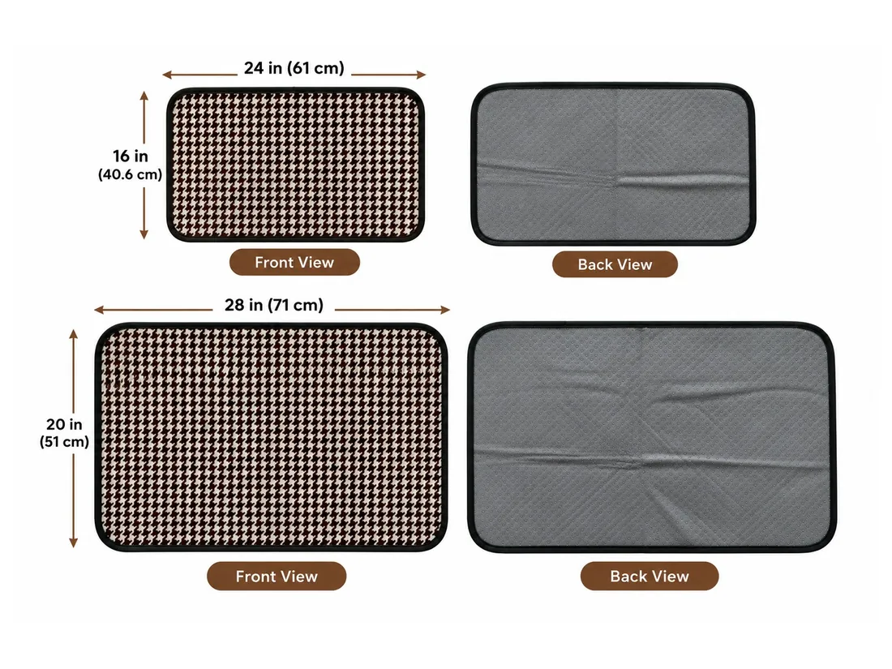
147 148
148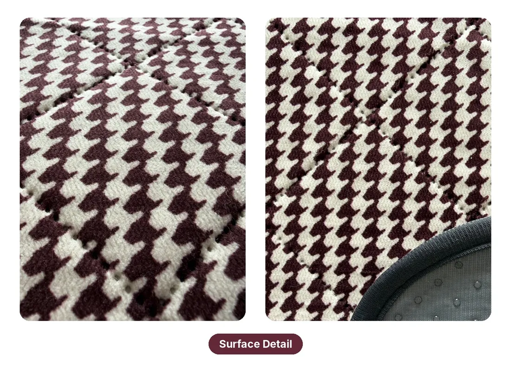
149 150
150Bordeaux Hahnentritt
Bordeaux Hahnentritt, digital bedruckt, mit Rautenprägung und gewebter Bandkante. Auf der wasserabweisenden Oberseite perlt Flüssigkeit ab und lässt sich abwischen. Zwei Größen.
| Größe | 512008: 28 × 20 in (71 × 51 cm) 512009: 24 × 16 in (61 × 40.6 cm) |
|---|---|
| Design | Bordeaux-weißer Hahnentritt, Digitaldruck |
| Oberstoff | Polyester, wasserabweisend |
| Steppung | Rautenmuster, Ultraschallprägung |
| Kante | Gewebte Bandeinfassung |
| Unterseite | Polyester mit rutschfesten Silikonpunkten (2 mm Punkte, 1 cm Abstand) |
| Lagen | 4 · TPU-Sperrfolie |
| Einsatz | Böden, Boxen, Sofas |
114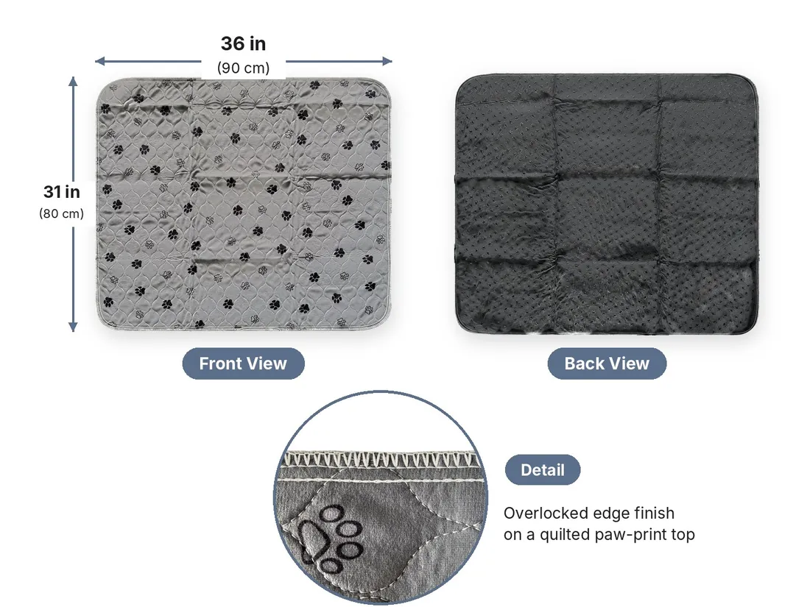
151 152
152 153
153 154
154Graues Pfotenmuster
Eine graue Unterlage mit Pfotenmuster, welliger Rautensteppung und gekettelter Kante. Die Unterseite hat pfotenförmige Silikon-Noppen für glatte Böden.
| Größe | 36 × 31 in (90 × 80 cm) |
|---|---|
| Design | Grau mit dunklen Pfotenabdrücken |
| Oberstoff | Polyester, saugfähig |
| Steppung | Wellige Rautensteppung |
| Kante | Gekettelte Kante |
| Unterseite | Polyester mit rutschfesten Silikon-Pfotenabdrücken |
| Lagen | 4 · TPU-Sperrfolie |
| Einsatz | Böden, Boxen, Sofas |
115 155
155 156
156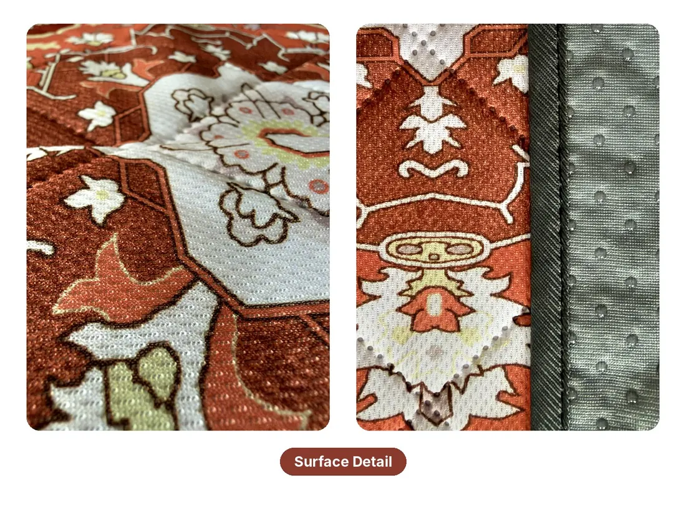
157 158
158Perserteppich-Muster, rot
Ein rot-cremefarbenes Perserteppich-Muster, das wie ein kleiner Teppich wirkt, mit Rautenprägung und eingefasster Kante. Graue gepunktete rutschfeste Unterseite.
| Größe | 24 × 19 in (62 × 47 cm) |
|---|---|
| Design | Rot-cremefarbenes Perserteppich-Muster |
| Oberstoff | Polyester, saugfähig |
| Steppung | Rautenmuster, Ultraschallprägung |
| Kante | Eingefasste Kante |
| Unterseite | Polyester mit rutschfesten Silikonpunkten (2 mm Punkte, 1 cm Abstand) |
| Lagen | 4 · TPU-Sperrfolie |
| Einsatz | Boxen, Betten, Böden |
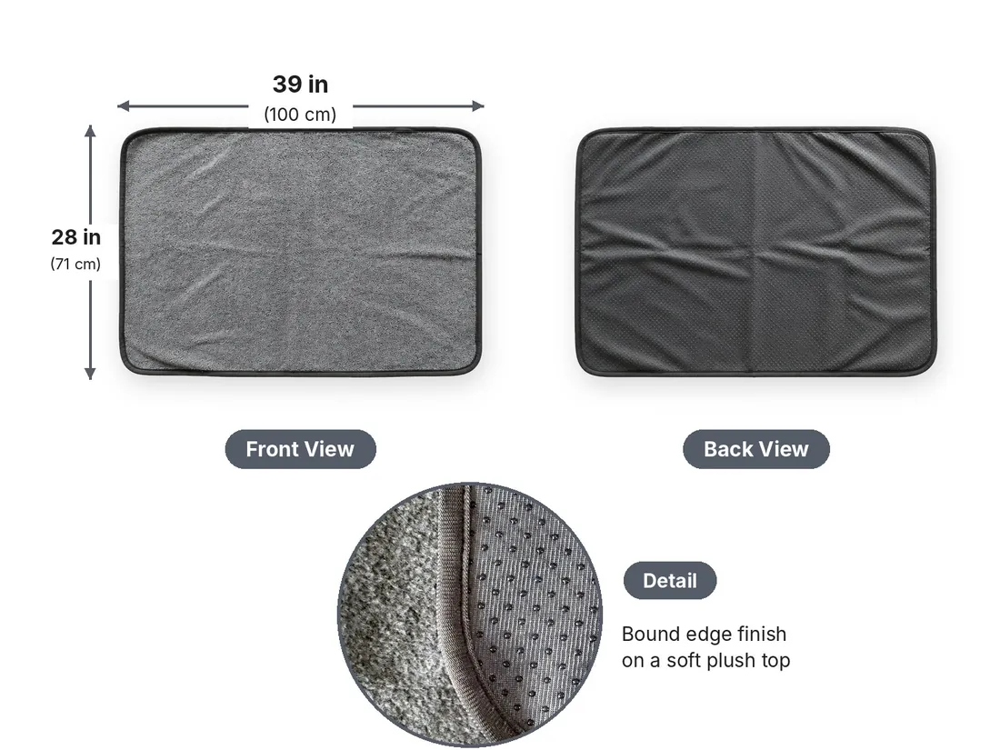
159 160
160 161
161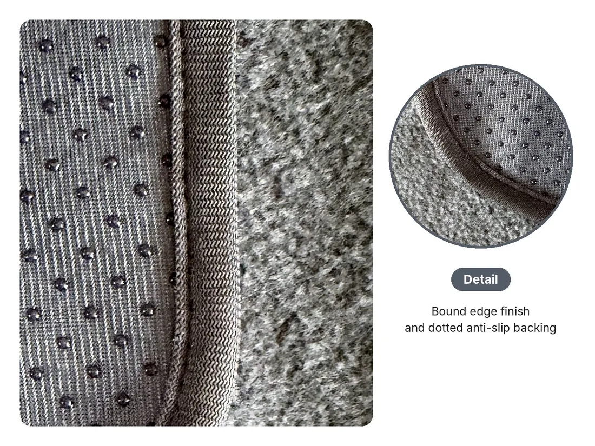
162Grauer Plüsch
Eine große Unterlage mit weicher grauer Plüsch-Oberseite und eingefasster Kante, für Hunde, die gern darauf liegen wie auf einem Bett. Dunkelgraue gepunktete rutschfeste Unterseite.
| Größe | 39 × 28 in (100 × 71 cm) |
|---|---|
| Design | Grauer Plüsch |
| Oberstoff | Polyester-Plüsch, saugfähig |
| Steppung | Ohne Steppung |
| Kante | Eingefasste Kante |
| Unterseite | Polyester mit rutschfesten Silikonpunkten (2 mm Punkte, 1 cm Abstand) |
| Lagen | 4 · TPU-Sperrfolie |
| Einsatz | Boxen, Betten, Böden |
 163
163 164
164 165
165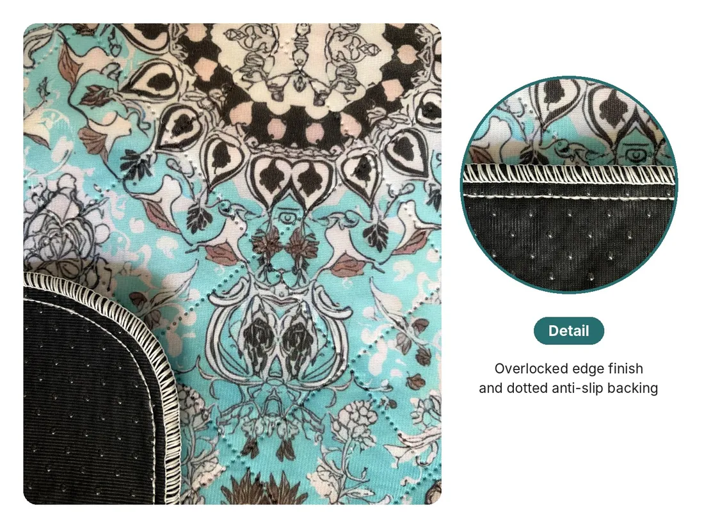
166Türkis-Medaillon
Ein türkisfarbenes Medaillon-Teppichmuster mit Rautenprägung und weißer gekettelter Kante. Dunkle gepunktete rutschfeste Unterseite.
| Größe | 24 × 18 in (61 × 46 cm) |
|---|---|
| Design | Türkis-Medaillon-Teppichmuster |
| Oberstoff | Polyester, saugfähig |
| Steppung | Rautenmuster, Ultraschallprägung |
| Kante | Gekettelte Kante |
| Unterseite | Polyester mit rutschfesten Silikonpunkten (2 mm Punkte, 1 cm Abstand) |
| Lagen | 4 · TPU-Sperrfolie |
| Einsatz | Boxen, Betten, Böden |
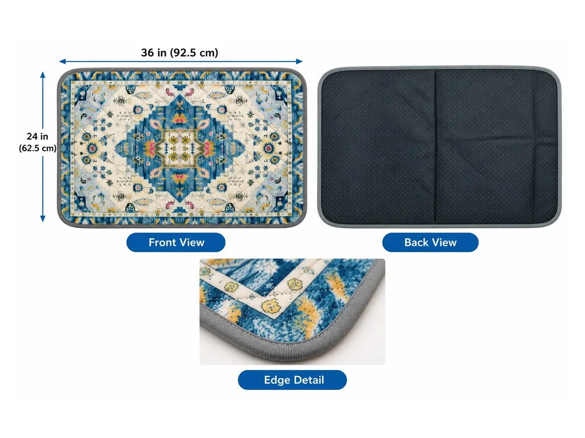
167 168
168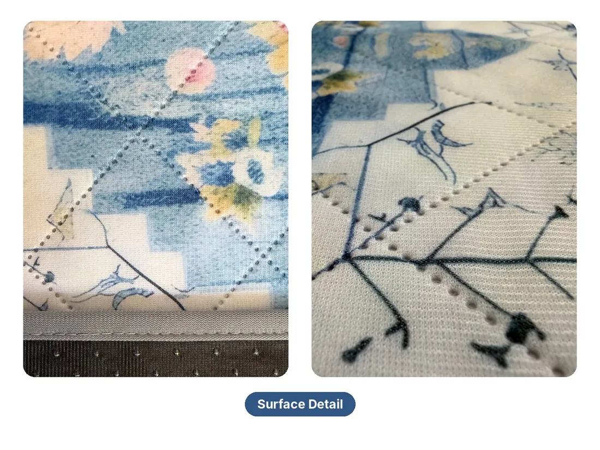
169 170
170Blauer Vintage-Teppich
Ein Vintage-Teppichmuster in Blau, Creme und zartem Gelb, mit Rautenprägung und grauer eingefasster Kante. Dunkelgraue gepunktete rutschfeste Unterseite.
| Größe | 36 × 24 in (92.5 × 62.5 cm) |
|---|---|
| Design | Vintage-Teppichmuster in Blau, Creme und Gelb |
| Oberstoff | Polyester, saugfähig |
| Steppung | Rautenmuster, Ultraschallprägung |
| Kante | Eingefasste Kante |
| Unterseite | Polyester mit rutschfesten Silikonpunkten (2 mm Punkte, 1 cm Abstand) |
| Lagen | 4 · TPU-Sperrfolie |
| Einsatz | Boxen, Betten, Böden |
119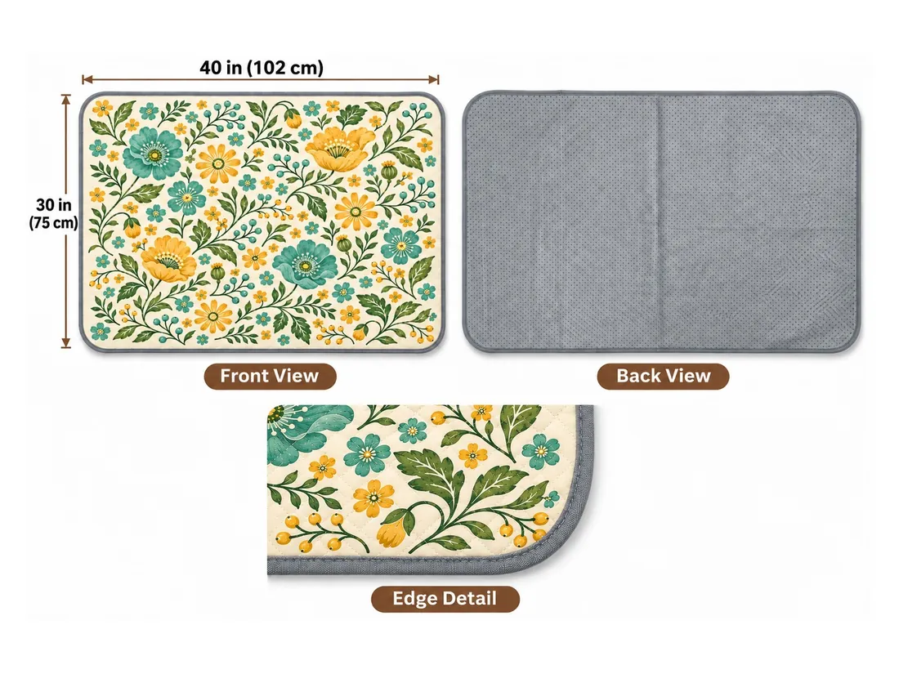
171106Blumenmuster
Petrol- und goldfarbene Blumen auf Creme, mit Rautensteppung und grauer eingefasster Kante. Passend für Sofas und große Betten.
| Größe | 30 × 40 in (75 × 102 cm) |
|---|---|
| Design | Petrol- und goldfarbene Blumen auf Creme |
| Oberstoff | Polyester, saugfähig |
| Steppung | Rautensteppung |
| Kante | Eingefasste Kante |
| Unterseite | Polyester mit rutschfesten Silikonpunkten (2 mm Punkte, 1 cm Abstand) |
| Lagen | 4 · TPU-Sperrfolie |
| Einsatz | Sofas, Betten, Boxen, Böden |
120 172
172 173
173 174
174Gelbe Streifen mit Bändern
Gelb-cremefarbene Streifen mit Achtecksteppung und schwarzer eingefasster Kante. Sechs Stoffbänder halten sie an Sofa, Bett, Box oder Autositz; Pfoten-Silikonnoppen auf der Unterseite.
| Größe | 42 × 28 in (106 × 72 cm) |
|---|---|
| Design | Gelb-cremefarbene Streifen |
| Oberstoff | Polyester, saugfähig |
| Steppung | Achtecksteppung |
| Kante | Eingefasste Kante, schwarz |
| Unterseite | Polyester mit rutschfesten Silikon-Pfotenabdrücken |
| Bänder | 6 Stoffbänder (4 Ecken, 2 Seiten) |
| Lagen | 4 · TPU-Sperrfolie |
| Einsatz | Sofas, Betten, Boxen, Autositze |
Käfigmatten für Hamster und Meerschweinchen
121 175
175 176
176 177
177Käfigmatte, Pilzmuster
Eine waschbare Käfigeinlage für Hamster, Meerschweinchen und andere Kleintiere: bedruckte Oberseite, saugfähiger Kern und rutschfeste Punkte, so wird die Käfigreinigung zum schnellen Austausch.
| Größe | 12 × 12 in (31 × 31 cm) |
|---|---|
| Design | Dunkelgrün mit Pilzmuster |
| Oberstoff | Polyester, saugfähig |
| Steppung | Rautenmuster, Ultraschallprägung |
| Kante | Stoffbandeinfassung |
| Unterseite | Polyester mit rutschfesten Silikonpunkten (2 mm Punkte, 1 cm Abstand) |
| Lagen | 4 · TPU-Sperrfolie |
| Einsatz | Käfige für Hamster, Meerschweinchen und Kleintiere |
122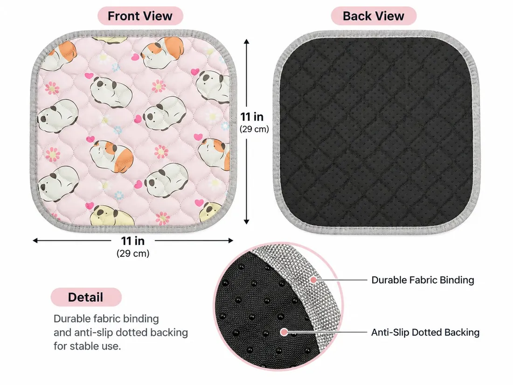
178 179
179 180
180Käfigmatte, Herzmuster
Eine kleine hellrosa Käfigmatte mit Herzmuster, saugfähigem Kern und gepunkteter rutschfester Unterseite.
| Größe | 11 × 11 in (29 × 29 cm) |
|---|---|
| Design | Hellrosa mit Herzmuster |
| Oberstoff | Polyester, saugfähig |
| Steppung | Ohne Steppung |
| Kante | Stoffbandeinfassung |
| Unterseite | Polyester mit rutschfesten Silikonpunkten (2 mm Punkte, 1 cm Abstand) |
| Lagen | 4 · TPU-Sperrfolie |
| Einsatz | Käfige für Hamster, Meerschweinchen und Kleintiere |
Was in jeder 512-Unterlage steckt
 181
181Ein 4-lagiger Aufbau hinter jedem Design
Von Design zu Design ändern sich nur Oberstoff, Steppung, Kante und Größe. Die Lagen darunter bleiben gleich.
| 1 · Oberseite | Polyester: saugfähig, wasserabweisend oder Plüsch |
|---|---|
| 2 · Saugkern | Nadelvlies, Polyester/Viskose |
| 3 · Sperrschicht | TPU-Folie |
| 4 · Rückseite | Polyester mit rutschfesten Silikonpunkten oder -pfoten |
| Pflege | Maschinenwaschbar und wiederverwendbar |
 182
182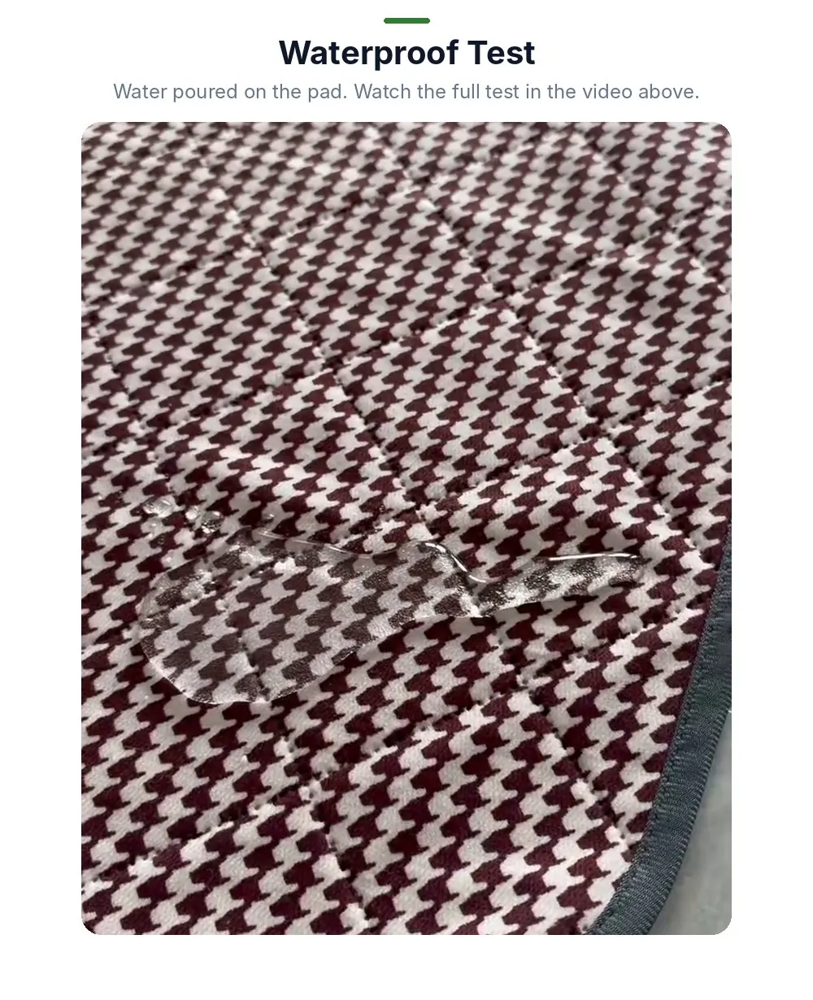
183Zwei Arten von Oberseite
Saugfähige Oberseiten ziehen Flüssigkeit sofort in den Kern: die Wahl für Welpentraining und Boxen. Auf wasserabweisenden Oberseiten perlt Flüssigkeit ab und lässt sich abwischen: die Wahl für Sofas, Betten und Deko-Unterlagen. In beiden Fällen hält die TPU-Folie Boden und Möbel trocken.
Ihre Version des 512-Sortiments
106Mit jedem Design starten, ändern, was Sie brauchen
Jedes Design oben lässt sich in Ihrer Größe, Stoffstärke, Saugleistung, Farbe oder Ihrem Druck fertigen, mit anderer Kante, Steppung oder rutschfestem Muster, Ihrem Logo und Ihrer Verpackung.
| Änderbar | Größe, Materialien, Stoffstärke, Saugleistung, Farbe, Druck, Kante, Steppung, rutschfestes Muster, Logo |
|---|---|
| Verpackung | Eigene Pflegeetiketten und farbige Einlegekarten; Einzelhandels- oder Großverpackung |
| Artikelnummern | Jede neue Kombination erhält ihre eigene 512-Nummer |
Planen Sie eine Tierunterlagen-Linie?
Senden Sie uns die gewünschten Artikelnummern, Größen und Mengen. Wir antworten innerhalb eines Werktags mit Preisen und Lieferzeit.